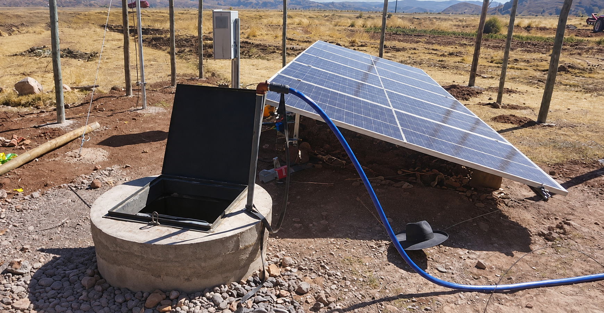

Misión
Desarrollar soluciones de tratamiento de agua accesibles, sostenibles y adaptables a las necesidades de las personas y las comunidades para obtener la máxima eficiencia y durabilidad de los sistemas de tratamiento.

QUIÉNES SOMOS
AquaNexo Hogar nace para atender un caso real: las viviendas del barrio Chacarilla, en la ciudad de Puno, cuyos pozos domésticos presentaron contaminación microbiológica y agua no apta para el consumo humano [1].
Aqua representa el agua que queremos proteger; Nexo, la conexión entre diagnóstico, tecnología y familia; y Hogar define nuestra escala de acción: las viviendas del barrio Chacarilla que comparten este problema.
Desarrollar soluciones de tratamiento de agua accesibles, sostenibles y adaptables a las necesidades de las personas y las comunidades para obtener la máxima eficiencia y durabilidad de los sistemas de tratamiento.
Ser reconocidos como una empresa líder en tratamiento en Perú y Latinoamérica que contribuyen en soluciones confiables al acceso seguro al agua en comunidades rurales y periurbanas, destacando por la calidad y eficiencia de nuestros servicios.
NUESTRO EQUIPO
AquaNexo Hogar está conformada por seis integrantes que integran el diseño técnico, la viabilidad económica y el acompañamiento a las familias del barrio Chacarilla usuarias del Módulo Nexo.
CEO
Dirección estratégica y coordinación general
Director de Estudios y Proyectos
Investigación, diseño técnico y desarrollo de proyectos
Director Financiero
Presupuesto y evaluación de viabilidad económica
Directora de Monitoreo y Servicios
Operación, monitoreo y control de la calidad del agua
Directora de Marketing
Identidad, comunicación y posicionamiento de AquaNexo Hogar
Directora del Área Social
Vinculación comunitaria y evaluación del impacto social
FUENTES